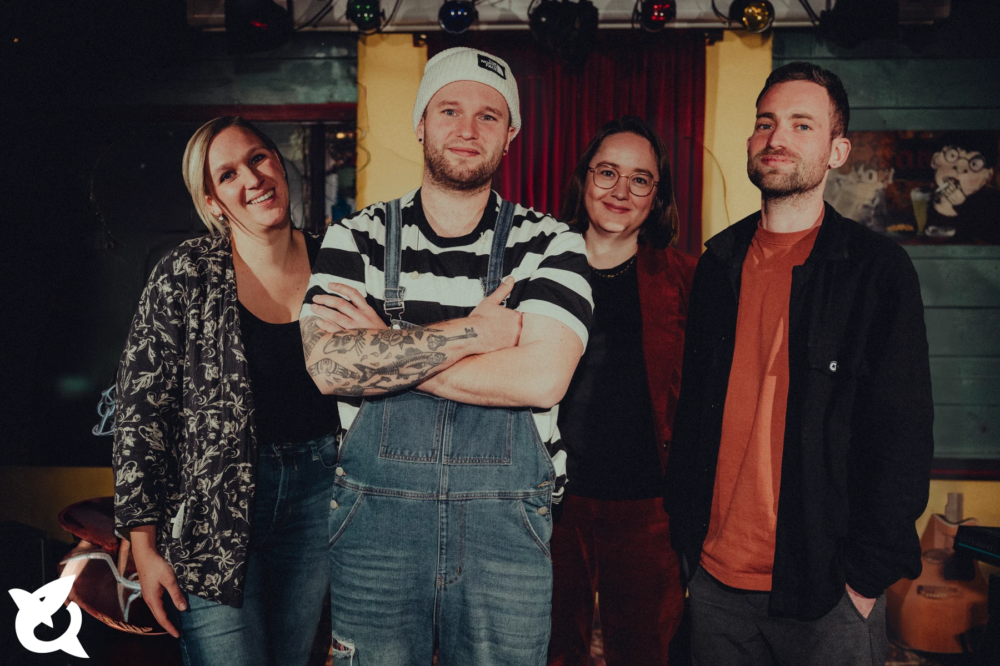
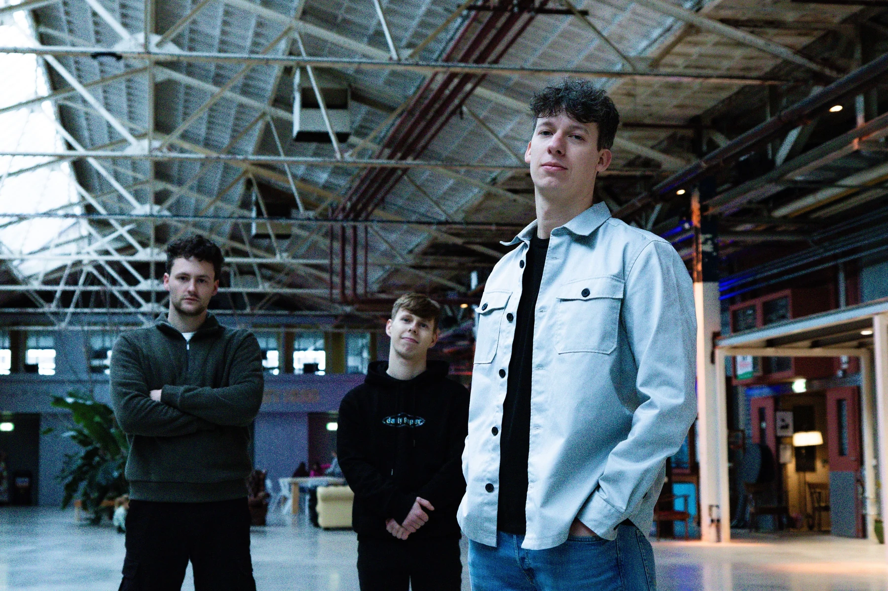
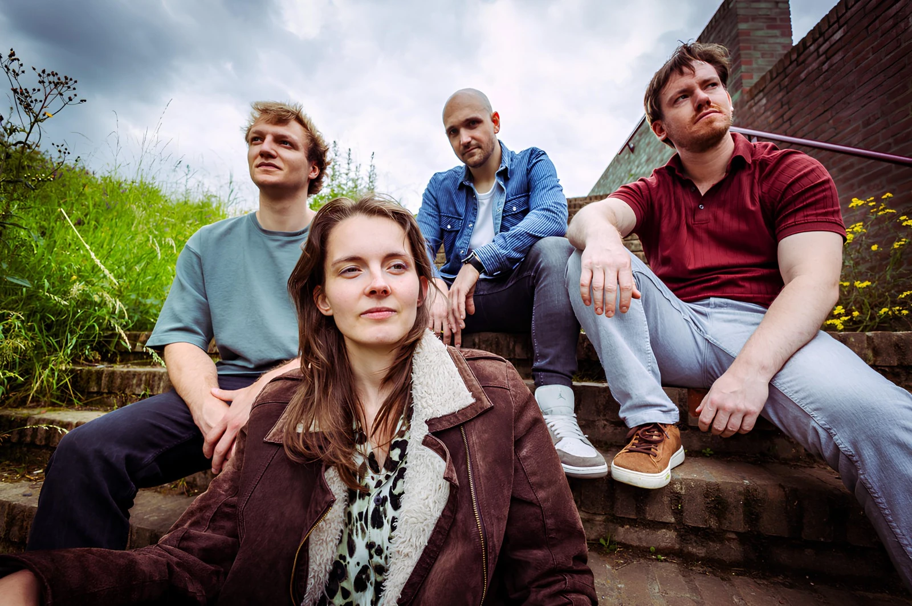
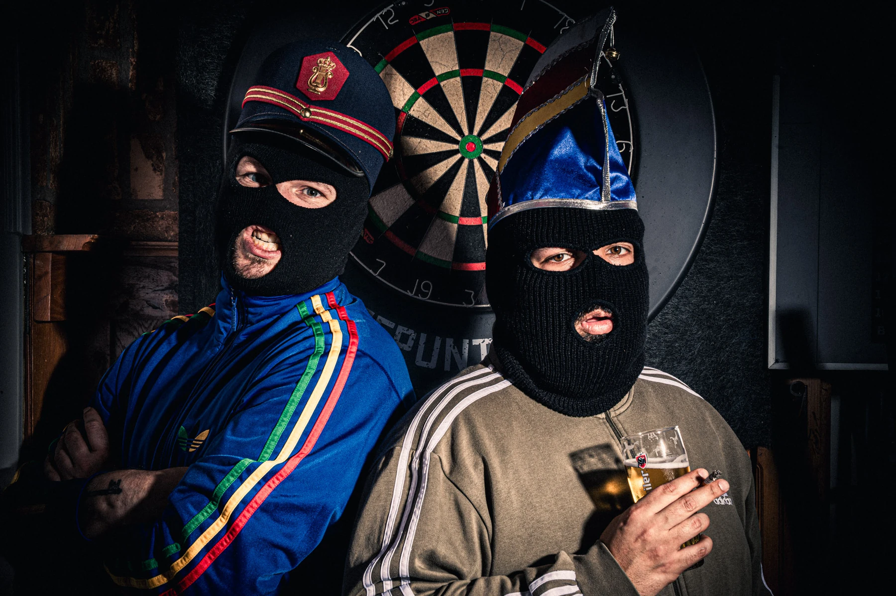
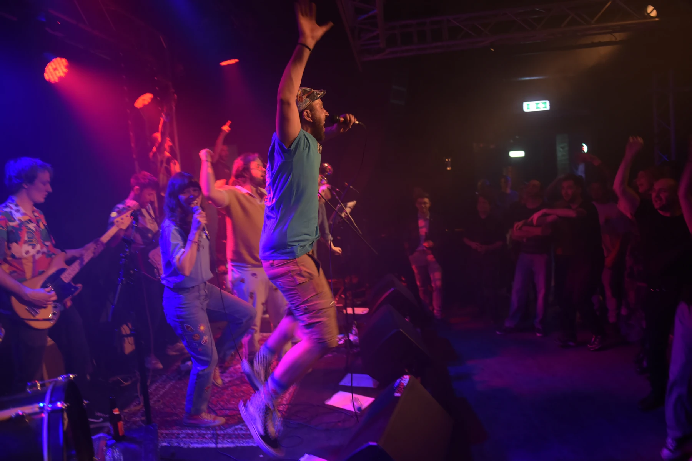

Tekstverslaafd gaat Limburgs! Geniet van een programma van Limburgstalige dichters, spoken word-artiesten, singer-songwriters en andere tekstmakers. Een podium waar nieuw talent hun werk kan laten zien en Limburgse (taal)kunst in alle vormen kan ontdekken.
Een eendaags festival in het plat
DIALEK.
Dat klinkt goed
Inloop dagprogramma 14:30
Inloop avondshowcase 19:30
27 februari 2027
ECI Cultuurfabriek
in Roermond
Tickets €6
27 februari 2027 · ECI Cultuurfabriek
Het volledige programma
Een festival vol taal, cultuur en muziek, maar dan in het Limburgs! Ontdek de volledige festivaldag, van het interactieve dagprogramma tot de showcase-avond vol nieuw Limburgs talent.
Cultuurcafé · 14:30–18:30
Dagprogramma
De Taalmatch brengt jongere bezoekers en oudere Limburgssprekers bij elkaar. Word gekoppeld aan iemand van een andere generatie en ontdek wat het Limburgs voor hen betekent. Wanneer spreek je wel of geen Limburgs? Wat is je favoriete uitspraak of herinnering? En hoe zie je het Limburgs in de toekomst? Met behulp van een korte gesprekskaart kom je erachter en wie weet ontdek je wel iets wat je nog niet wist!
Aanmelden kan t/m dinsdag 23 februari 2027 via dit formulier, of anders op de festivaldag zelf. Een paar dagen voor DIALEK ontvang je een mail met praktische informatie over de Taalmatch.
Limburgs spreken is geen vereiste om mee te doen aan de Taalmatch. Het enige wat je nodig hebt is enthousiasme en een open blik om iemand anders’ verhaal te leren kennen!
Denk aan een Limburgse taalquiz, een kaart met favoriete woorden en streekvarianten, of een live podcast waarbij bezoekers kunnen aansluiten. De definitieve vorm wordt mogelijk samen met het Limburgs Museum uitgewerkt.
In het Cultuurcafé krijgen makers, programmeurs en andere professionals uit de Limburgstalige cultuursector de kans om elkaar te ontmoeten, kennis te delen en eventueel zelfs nieuwe samenwerkingen aan te gaan. Iedereen is welkom om aan te sluiten!
Taalactiviteiten en netwerken pauzeren tijdens het tweede Tekstverslaafd-blok (16:45–17:30).
Frietkraam op het terrein, dus blijf vooral hangen!
Popzaal · inloop 19:30 · start 20:00
Avondshowcase
Showblok 01
Heb je ooit blues met reggaeton horen blenden? Of tango met old school hiphop? Opgeschaoren Troubadours is een verrassende Limburgstalige formatie die zich niet in een hokje laat plaatsen. De rode draad? Dat zijn de raps in het dialect uit de Westelijke Mijnstreek. Van vlijmscherpe maatschappijkritische tirades tot zachte poëtische lovesongs. Laat je meenemen in de rijke en gevarieerde belevingswereld van deze gewone muzikanten met een buitengewone passie.
Opgeschaoren Troubadours lanceerde in 2020 de single 'Meaters’, die in 2022 werd opgevolgd door de debuut-EP 'Van Laer'. In 2024 zette de band in samenwerking met Provincie Limburg en maatschappelijke organisaties de campagne 'ICH DRUIM DOOR' in, waarmee op basis van het gelijknamige album jongeren werden aangespoord om met de Limburgse streektaal aan de slag te gaan. In datzelfde jaar behaalde het collectief de tweede plaats met de single ‘Jóngesdruim' op de Limburgse editie van het Regio Songfestival.

Melton is een band van Limburgse bodem, ontstaan vanuit het muziekproject van singer-songwriter Josh Mosa. Met een sound waarin alternatieve pop, folk en softrock samenkomen, vertaalt de band verhalen rondom de thema’s Heart, Home en Mind naar zowel Engelstalige als Limburgstalige muziek. Van rauwe energie tot intieme, kwetsbare momenten: reflectie staat aan het roer, terwijl de muziek het verhaal vertelt en gevoel de ruimte krijgt.
Spotify-link volgt
–Pauze
Showblok 02
Een aantal jaar geleden begon In Limbo als Engelse coverband. Na een tijdje ontstond de wens om eigen werk te gaan maken, maar hun eigen geluid vinden bleek nog niet zo makkelijk als gedacht. Na diep graven en vooral veel plezier met elkaar hebben ze het dan toch te pakken: hun eerste EP in het Limburgs is een feit. Daarbij houden ze nog steeds van keiharde poprock, geïnspireerd door de Arctic Monkeys, Florence + The Machine en The Kooks, maar dan op hun eigen manier. Ze combineren scheurende gitaren met teksten die onverwacht dichtbij komen. In Limbo laat zien dat Limburg meer te bieden heeft dan alleen carnavalsmuziek en vlaai. Want een wijze vent zei ooit: “‘t is een kwestie van geduld!”
Luister op Spotify
Riethamer Rekords is een kersvers hiphopcollectief, opgetrokken uit het sladder van de Maasoevers tussen Elsloo en Meers en bekend van de virale dialecthit ‘Vlaaiboys’. Lil $maerbaer en Dokter Drek brengen maaswaterflows over beukende hiphopbeats. Limburgstalige brag & boast, ruw en ongepolijst. Voor alle zachte G’s die klaar zijn met sjoenkelmuziek.
Luister op Spotify
The Basement Collective sluit de showcase af met het gezelligste protest dat je in Limburg kunt vinden. Dit bonte gezelschap uit Sittard-Geleen mengt punk, rock en Limburgstalige anthems over de problemen die er echt toe doen: huizen die je nooit kunt betalen, festivaltickets die steeds duurder worden en de aarde die in brand staat. Maar wees gerust, het veertienkoppige collectief neemt zichzelf totaal niet serieus. “Voor en door vrienden” – want als de wereld vergaat, dan toch minstens met een pilsje in je handen.
Luister op Spotify
De avond wordt gepresenteerd door Lotte Zeptner · Lotte oet Limburg
Onze enthousiaste presentatrice en Limfluencer.
De avond wordt gepresenteerd door Lotte Zeptner, ook wel bekend als ‘Lotte oet Limburg’. Met haar YouTube-serie Plat in de Ploog zet ze het Limburgs al langer op een frisse manier in de spotlight. Tijdens DIALEK praat ze de avond aan elkaar met alles wat je wilde weten over de Limburgse taal.
Over DIALEK
muziek die klinkt als nu, maar voelt als thuis.
DIALEK wil laten horen hoe mooi het kan zijn om muziek te maken en te ervaren in de taal waarin je bent opgegroeid. Want hoewel steeds minder jongeren dagelijks het dialect spreken, groeit de trots op de Limburgse taal juist. Door jong talent een podium te geven die bewust kiest voor het Limburgs in hun originele, eigentijdse songs laat het zien dat het dialect niet alleen thuis hoort bij carnaval of traditie, maar ook past binnen een pop-, rock- en hiphopsound van nu.
Samen met
en andere partners.